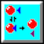

 EnzLab Help
EnzLab is a program that simulates the investigation of the kinetics of a randomly-generated enzyme.
Introductory information
Introduction
Background to your study
How the program works
Abbreviations used
Units used
Your experimental record
How to ...
Select experimental parameters
Perform an experiment
Assess experimental precision
Perform a kinetic analysis
Obtain a pH profile
Copy your results to the clipboard
Save your current work
Reload work from disk
Change the printer setup
Restart EnzLab
End EnzLab
Guides
Guide to EnzLab dialog boxes
Guide to EnzLab menus
'How to' guide